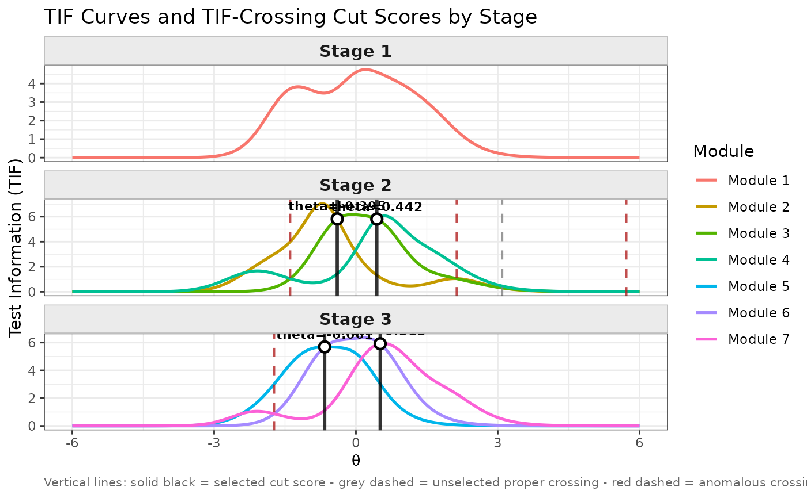

Simulates an MST administration for a panel of examinees. At each stage,
examinees are routed to a module based on their current ability estimate
(or a set of cut scores), and a final ability estimate is computed from the
accumulated responses across all administered stages. The function supports
all IRT models available in irtQ (1PLM, 2PLM, 3PLM, GRM, GPCM) and
all scoring methods available in est_score.
The overall structure - separate route_score and final_score
list arguments, and the route_map/module matrix conventions -
was inspired by the randomMST() function in the mstR package
(Magis et al., 2017).
Usage
run_mst(
x,
route_map,
module,
theta = NULL,
response = NULL,
D = 1,
ini_mod = NULL,
route_method = "bmat",
cut_score = NULL,
route_score = list(method = "ML", range = c(-5, 5), norm.prior = c(0, 1), nquad = 41L,
tol = 1e-04, max.iter = 100L, fence.a = 3, fence.b = NULL, intpol = TRUE, range.tcc =
c(-7, 7), max.it = 500L),
final_score = list(method = "ML", range = c(-5, 5), norm.prior = c(0, 1), nquad = 41L,
tol = 1e-04, max.iter = 100L, fence.a = 3, fence.b = NULL, intpol = TRUE, range.tcc =
c(-7, 7), max.it = 500L),
se = TRUE,
missing = NA,
verbose = TRUE,
return_full_resp = FALSE
)Arguments
- x
A data frame of item bank metadata following the irtQ format (columns:
id,cats,model,par.1,par.2, ...). Useshape_dfto create this frame orbring.flexmirt/bring.bilog/bring.parscale/bring.mirtto import from IRT software output. The function callsconfirm_df(x)internally to validate and normalise the metadata.- route_map
A binary square matrix defining the MST transition structure. A 1 at row i, column j means that a test taker can be routed from module i to module j. Equivalent to the
transMatrixargument inrandomMST()from mstR (Magis et al., 2017). Seereval_mstfor details.- module
A binary matrix mapping items (rows) to modules (columns).
module[j, m] = 1means item j belongs to module m. Equivalent to themodulesargument inrandomMST()from mstR (Magis et al., 2017). Must havenrow(module) == nrow(x)andncol(module) == total number of modules in the panel.- theta
A numeric vector of true ability values, one per examinee (length N). Used to simulate item responses when
responseisNULL, and stored in the result for bias/RMSE computation. Eitherthetaorresponse(or both) must be provided. Ifthetais omitted and onlyresponseis given,true.thetain the result will beNULLand bias/RMSE cannot be computed.- response
An optional N x J matrix of observed item responses, where N is the number of examinees and J is the total number of items in the item bank (
nrow(x)). Responses for items not administered at a given stage may beNA. IfNULLandthetais provided, responses are simulated internally viasimdat. If boththetaandresponseare provided,responseis used as-is andthetais retained for evaluation (bias/RMSE computation) only. Providing a pre-generatedresponsematrix (e.g., fromsimdat(x, theta, D)) is useful when you want to compare different routing methods or scoring options on the same set of item responses.- D
A numeric scaling constant for the IRT model. Use
D = 1(default) for the logistic metric orD = 1.702to approximate the normal ogive.- ini_mod
Either
NULL(default) or a single positive integer index into the stage-1 module list (panel_info(route_map)$config[[1]]). WhenNULL, each examinee is independently and randomly assigned to one of the stage-1 modules with equal probability - appropriate for MST panels that use spiralling or booklet-based stage-1 assignment, or for panels with only a single stage-1 module (where random assignment is equivalent to a fixed assignment). When an integer is supplied, all examinees begin with that stage-1 module; useini_mod = 1to force all examinees to the first (and typically only) stage-1 module.- route_method
A character string specifying the adaptive routing method used to select the next module at each stage transition.
"bmat"B-matching: selects the module whose average item location (difficulty) is closest to the current ability estimate. For dichotomous items the b parameter is used; for polytomous items (GRM, GPCM) the mean of the threshold / step parameters is used.
"mfi"Maximum Fisher Information: selects the module that provides the highest test information function (TIF) value at the current ability estimate.
NULLCut-score routing: uses the cut scores supplied in
cut_scoreto route examinees to the next module. Each examinee's current routing score is compared against the cut scores to determine which of the reachable next-stage modules to administer.
Default is
"bmat".- cut_score
A list of numeric vectors specifying the routing cut scores used when
route_method = NULL. The list should haven.stage - 1elements, one per stage transition. Element s contains the cut scores for routing from stage s to stage s+1. For example, in a 1-3-3 MST,cut_score = list(c(-0.5, 0.5), c(-0.6, 0.6))routes examinees whose stage-1 score is below \(-0.5\) to the easiest stage-2 module, between \(-0.5\) and \(0.5\) to the medium module, and above \(0.5\) to the hardest module. Ignored whenroute_methodis"bmat"or"mfi". Default isNULL.- route_score
A named list specifying the scoring method and options used to obtain intermediate ability estimates for routing decisions (applied after every stage except the last). Fields:
methodCharacter. One of
"ML"(maximum likelihood),"WL"(weighted likelihood; Warm, 1989),"MLF"(maximum likelihood with fences; Han, 2016),"MAP"(maximum a posteriori),"EAP"(expected a posteriori; Bock & Mislevy, 1982),"EAP.SUM"(EAP summed scoring; Thissen et al., 1995), or"INV.TCC"(inverse test characteristic curve scoring; Lim et al., 2021). For"EAP.SUM"and"INV.TCC", a sum-score-to-theta lookup table is pre-computed once per module before the simulation loop; routing theta is then obtained by a single named-vector lookup, making the approach efficient for large \(N\). Default:"ML".rangeNumeric vector of length 2: lower and upper bounds for the ability scale. Default:
c(-5, 5).norm.priorNumeric vector of length 2: mean and SD of the normal prior for MAP/EAP. Default:
c(0, 1).nquadInteger: number of quadrature points for EAP. Default:
41.tolNumeric: convergence tolerance for iterative methods. Default:
1e-4.max.iterInteger: maximum iterations. Default:
100.fence.aNumeric: discrimination parameter of fence items for MLF. Default:
3.0.fence.bNumeric vector of length 2 or
NULL: difficulty parameters of the lower and upper fence items. IfNULL,rangeis used. Default:NULL.intpolLogical: enable linear interpolation for
"INV.TCC". Default:TRUE.range.tccNumeric vector of length 2: theta search range for
"INV.TCC". Default:c(-7, 7).max.itInteger: maximum bisection iterations for
"INV.TCC". Default:500L.
Unspecified fields take their defaults; the full default is
list(method = "ML", range = c(-5, 5), norm.prior = c(0, 1),nquad = 41L, tol = 1e-4, max.iter = 100L, fence.a = 3.0,fence.b = NULL, intpol = TRUE, range.tcc = c(-7, 7), max.it = 500L). Example:route_score = list(method = "INV.TCC", range.tcc = c(-5, 5)).- final_score
A named list specifying the scoring method and options for the final ability estimate (applied to all items accumulated across the entire administered pathway). Supports all fields in
route_scoreplus:methodCharacter. Supports all
route_scoremethods, plus"EAP.SUM"(EAP summed scoring; Thissen et al., 1995) and"INV.TCC"(inverse test characteristic curve scoring; Lim et al., 2021). Default:"ML".intpolLogical: enable linear interpolation for
"INV.TCC". Default:TRUE.range.tccNumeric vector of length 2: theta search range for
"INV.TCC". Default:c(-7, 7).max.itInteger: maximum bisection iterations for
"INV.TCC". Default:500.
The full default is equivalent to
list(method = "ML", range = c(-5, 5), norm.prior = c(0, 1),nquad = 41L, tol = 1e-4, max.iter = 100L, fence.a = 3.0, fence.b = NULL,intpol = TRUE, range.tcc = c(-7, 7), max.it = 500L).- se
Logical. Whether to compute and return the standard error of the final ability estimate. SE is computed for all
final_scoremethods: for"ML","WL","MLF","MAP", and"EAP"via the Fisher information / posterior variance; for"EAP.SUM"and"INV.TCC"via the posterior standard deviation stored in the pre-computed lookup table. ReturnsNAwhense = FALSE, when all responses are missing, or when the sum score falls outside the estimable range (e.g. a perfect or zero score beyondrange.tcc). Default isTRUE.- missing
A scalar specifying how missing (not-administered) responses are represented in
response. Default isNA.- verbose
Logical. If
TRUE, prints progress messages to the console during the simulation (approximately every 10\ Default isTRUE.- return_full_resp
Logical. If
TRUE, thefull.respelement of the returned list is an N x J integer matrix, where N is the number of examinees and J =nrow(x)(all items in the item bank). Cell[i, j]contains examinee i's response to item j if that item was administered, orNAif it was not. Row names are"examinee.1","examinee.2", etc.; column names are the item IDs fromx$id. IfFALSE(default),full.respisNULL. Because this matrix can be large for large panels and many examinees, it is not populated by default.
Value
An object of class "run_mst", which is a named list
containing:
callThe matched function call.
est.thetaA numeric vector of length N containing the final ability estimate for each examinee.
se.thetaA numeric vector of length N containing the standard error of the final ability estimate. All seven
final_scoremethods return SE; for"EAP.SUM"and"INV.TCC", SE is the posterior standard deviation from the pre-computed lookup table.NAwhense = FALSE, when all responses are missing, or when the sum score falls outside the estimable range.theta.routeAn N x
n.stagenumeric matrix of ability estimates. Columns 1 ton.stage - 1are the intermediate routing estimates; columnn.stageis the final estimate (equal toest.theta).pathAn N x
n.stageinteger matrix of administered module indices.true.thetaThe
thetaargument (true abilities), orNULLif not provided.panelThe output of
panel_info(route_map).DThe scaling constant used.
route.methodThe
route_methodargument.route.scoreThe fully-merged
route_scorelist (with all defaults applied).final.scoreThe fully-merged
final_scorelist (with all defaults applied).NNumber of examinees.
full.respAlways present in the returned list. When
return_full_resp = TRUE, an N x J integer matrix of all item responses, where N is the number of examinees and J =nrow(x)(total items in the item bank). Row names are"examinee.1","examinee.2", etc.; column names are the item IDs fromx$id.NAfor items not administered to a given examinee. Whenreturn_full_resp = FALSE(default), this element isNULL.
Details
Panel structure: The function first calls panel_info
to identify stages, module membership, and valid pathways from
route_map. Module m's items are those where
module[, m] == 1.
Response simulation: If response is NULL, item
responses are simulated from theta using simdat.
Stage-1 module assignment: When ini_mod = NULL (default),
each examinee is independently assigned to a stage-1 module by uniform
random sampling from panel_info(route_map)$config[[1]]. For panels
with a single stage-1 module (the most common design), this is equivalent
to a fixed assignment. For panels with multiple stage-1 modules (e.g., a
2-3-3 or 3-2-3 design), random assignment approximates the spiralling or
booklet-based allocation used in operational testing. When ini_mod
is an integer, all examinees start at the specified stage-1 module.
Routing (stages 1 to n.stage - 1): After each non-final stage,
an intermediate ability estimate is obtained from the current stage's
responses using the route_score method. This estimate is used to
select the next-stage module:
"bmat": the reachable module (viaroute_map) whose mean item location is closest to the routing estimate is selected. For dichotomous items, the location is the b parameter; for GRM/GPCM items, it is the mean of the threshold / step parameters."mfi": the reachable module with the highest test information at the routing estimate is selected.NULL: the routing estimate is compared against the cut scores incut_score[[s]](for the transition from stage s to stage s+1) to assign a rank, and the rank-th reachable module (ordered by module index) is administered. If the rank exceeds the number of reachable modules, the last module is used.
Final scoring: Responses from all administered stages are
concatenated, and the final ability estimate is computed using the
final_score method.
References
Bock, R. D., & Mislevy, R. J. (1982). Adaptive EAP estimation of ability in a microcomputer environment. Applied Psychological Measurement, 6(4), 431-444. doi:10.1177/014662168200600405
Han, K. T. (2016). Maximum likelihood score estimation method with fences for short-length tests and computerized adaptive tests. Applied Psychological Measurement, 40(4), 289-301. doi:10.1177/0146621616631317
Lim, H., Davey, T., & Wells, C. S. (2021). A recursion-based analytical approach to evaluate the performance of MST. Journal of Educational Measurement, 58(2), 154-178. doi:10.1111/jedm.12276
Magis, D., Yan, D., & von Davier, A. A. (2017). Computerized adaptive and multistage testing with R: Using packages catR and mstR. Springer. doi:10.1007/978-3-319-69218-0
Thissen, D., Pommerich, M., Billeaud, K., & Williams, V. S. L. (1995). Item response theory for scores on tests including polytomous items with ordered responses. Applied Psychological Measurement, 19(1), 39-49. doi:10.1177/014662169501900105
Warm, T. A. (1989). Weighted likelihood estimation of ability in item response theory. Psychometrika, 54(3), 427-450. doi:10.1007/BF02294627
Examples
# \donttest{
## ---------------------------------------------------------
## Example 1: bmat routing with ML scoring (default)
## Using the simMST 1-3-3 panel (7 modules, 8 items each)
## ---------------------------------------------------------
# Load item bank metadata
x <- simMST$item_bank
module <- simMST$module
route_map <- simMST$route_map
# True abilities for 500 examinees
set.seed(42)
theta_true <- rnorm(500, mean = 0, sd = 1)
# Run MST simulation with bmat routing and ML scoring
result_bmat <- run_mst(
x = x,
route_map = route_map,
module = module,
theta = theta_true,
D = 1.702,
route_method = "bmat",
route_score = list(method = "ML", range = c(-4, 4)),
final_score = list(method = "ML", range = c(-4, 4)),
se = TRUE
)
#> [run_mst] Panel: 3 stages, 7 modules (1-3-3 design)
#> [run_mst] Simulating responses for 500 examinees...
#> [run_mst] Scoring 500 examinees...
#> Processing examinee 1 / 500 ...
#> Processing examinee 50 / 500 ...
#> Processing examinee 100 / 500 ...
#> Processing examinee 150 / 500 ...
#> Processing examinee 200 / 500 ...
#> Processing examinee 250 / 500 ...
#> Processing examinee 300 / 500 ...
#> Processing examinee 350 / 500 ...
#> Processing examinee 400 / 500 ...
#> Processing examinee 450 / 500 ...
#> Processing examinee 500 / 500 ...
#> [run_mst] Done.
# Print simulation summary
print(result_bmat)
#>
#> Call:
#> run_mst(x = x, route_map = route_map, module = module, theta = theta_true,
#> D = 1.702, route_method = "bmat", route_score = list(method = "ML",
#> range = c(-4, 4)), final_score = list(method = "ML",
#> range = c(-4, 4)), se = TRUE)
#>
#> MST Simulation Results
#> ========================================
#>
#> Panel structure:
#> Stages : 3
#> Modules per stage : 1 - 3 - 3
#> Valid pathways : 7
#> Routing method : bmat (b-matching)
#>
#> Number of examinees : 500
#>
#> Ability estimation:
#> Routing method : ML
#> Final method : ML
#>
#> Final ability estimates (est.theta):
#> Mean : -0.009
#> SD : 1.076
#> Min : -4.000
#> Max : 4.000
#>
#> Estimation accuracy (est.theta - true.theta):
#> Bias : 0.021
#> RMSE : 0.319
#>
#> Module frequency by stage:
#> Stage 1: Module 1: 500 (100.0%)
#> Stage 2: Module 2: 177 (35.4%), Module 3: 106 (21.2%), Module 4: 217 (43.4%)
#> Stage 3: Module 5: 179 (35.8%), Module 6: 131 (26.2%), Module 7: 190 (38.0%)
#>
# Final ability estimates
head(result_bmat$est.theta)
#> [1] 1.6882857 -0.8288973 0.6168219 0.5453383 0.4140971 0.2068442
# Module pathway taken by each examinee
head(result_bmat$path)
#> stage.1 stage.2 stage.3
#> [1,] 1 4 7
#> [2,] 1 2 6
#> [3,] 1 4 7
#> [4,] 1 4 6
#> [5,] 1 3 7
#> [6,] 1 4 6
## ---------------------------------------------------------
## Example 2: Cut-score routing with EAP routing and ML final scoring
## EAP keeps the routing estimate finite even from a short Stage 1
## module (e.g., a perfect or zero score), while ML avoids the shrinkage
## that EAP's prior would otherwise introduce in the reported final score.
## ---------------------------------------------------------
cut_score <- simMST$cut_score # list(c(-0.45, 0.46), c(-0.42, 0.45))
result_cut <- run_mst(
x = x,
route_map = route_map,
module = module,
theta = theta_true,
D = 1.702,
route_method = NULL,
cut_score = cut_score,
route_score = list(method = "EAP", norm.prior = c(0, 1), nquad = 41),
final_score = list(method = "ML", range = c(-4, 4)),
se = TRUE
)
#> [run_mst] Panel: 3 stages, 7 modules (1-3-3 design)
#> [run_mst] Simulating responses for 500 examinees...
#> [run_mst] Scoring 500 examinees...
#> Processing examinee 1 / 500 ...
#> Processing examinee 50 / 500 ...
#> Processing examinee 100 / 500 ...
#> Processing examinee 150 / 500 ...
#> Processing examinee 200 / 500 ...
#> Processing examinee 250 / 500 ...
#> Processing examinee 300 / 500 ...
#> Processing examinee 350 / 500 ...
#> Processing examinee 400 / 500 ...
#> Processing examinee 450 / 500 ...
#> Processing examinee 500 / 500 ...
#> [run_mst] Done.
print(result_cut)
#>
#> Call:
#> run_mst(x = x, route_map = route_map, module = module, theta = theta_true,
#> D = 1.702, route_method = NULL, cut_score = cut_score, route_score = list(method = "EAP",
#> norm.prior = c(0, 1), nquad = 41), final_score = list(method = "ML",
#> range = c(-4, 4)), se = TRUE)
#>
#> MST Simulation Results
#> ========================================
#>
#> Panel structure:
#> Stages : 3
#> Modules per stage : 1 - 3 - 3
#> Valid pathways : 7
#> Routing method : cut-score based
#>
#> Number of examinees : 500
#>
#> Ability estimation:
#> Routing method : EAP
#> Final method : ML
#>
#> Final ability estimates (est.theta):
#> Mean : -0.028
#> SD : 1.003
#> Min : -4.000
#> Max : 4.000
#>
#> Estimation accuracy (est.theta - true.theta):
#> Bias : 0.002
#> RMSE : 0.292
#>
#> Module frequency by stage:
#> Stage 1: Module 1: 500 (100.0%)
#> Stage 2: Module 2: 142 (28.4%), Module 3: 219 (43.8%), Module 4: 139 (27.8%)
#> Stage 3: Module 5: 169 (33.8%), Module 6: 163 (32.6%), Module 7: 168 (33.6%)
#>
## ---------------------------------------------------------
## Example 3: Using a pre-generated response matrix
## (useful when comparing multiple routing methods on the
## same simulated responses, or when using real observed data)
## ---------------------------------------------------------
# Generate responses once from theta using simdat()
set.seed(123)
theta_true2 <- rnorm(500, mean = 0, sd = 1)
resp_matrix <- simdat(x = x, theta = theta_true2, D = 1.702)
# resp_matrix is an N x J matrix (N examinees x J total items in bank)
# Now run run_mst() twice with the SAME responses but different routing methods
# Method A: bmat routing
result_A <- run_mst(
x = x,
route_map = route_map,
module = module,
theta = theta_true2, # kept for bias/RMSE evaluation
response = resp_matrix, # pre-generated N x J response matrix
D = 1.702,
route_method = "bmat",
route_score = list(method = "EAP", norm.prior = c(0, 1), nquad = 41),
final_score = list(method = "ML", range = c(-4, 4)),
se = FALSE
)
#> [run_mst] Panel: 3 stages, 7 modules (1-3-3 design)
#> [run_mst] Scoring 500 examinees...
#> Processing examinee 1 / 500 ...
#> Processing examinee 50 / 500 ...
#> Processing examinee 100 / 500 ...
#> Processing examinee 150 / 500 ...
#> Processing examinee 200 / 500 ...
#> Processing examinee 250 / 500 ...
#> Processing examinee 300 / 500 ...
#> Processing examinee 350 / 500 ...
#> Processing examinee 400 / 500 ...
#> Processing examinee 450 / 500 ...
#> Processing examinee 500 / 500 ...
#> [run_mst] Done.
# Method B: cut-score routing using the same responses
result_B <- run_mst(
x = x,
route_map = route_map,
module = module,
theta = theta_true2,
response = resp_matrix, # identical response matrix -> fair comparison
D = 1.702,
route_method = NULL,
cut_score = simMST$cut_score,
route_score = list(method = "EAP", norm.prior = c(0, 1), nquad = 41),
final_score = list(method = "ML", range = c(-4, 4)),
se = FALSE
)
#> [run_mst] Panel: 3 stages, 7 modules (1-3-3 design)
#> [run_mst] Scoring 500 examinees...
#> Processing examinee 1 / 500 ...
#> Processing examinee 50 / 500 ...
#> Processing examinee 100 / 500 ...
#> Processing examinee 150 / 500 ...
#> Processing examinee 200 / 500 ...
#> Processing examinee 250 / 500 ...
#> Processing examinee 300 / 500 ...
#> Processing examinee 350 / 500 ...
#> Processing examinee 400 / 500 ...
#> Processing examinee 450 / 500 ...
#> Processing examinee 500 / 500 ...
#> [run_mst] Done.
# Compare RMSE of the two routing strategies
rmse_A <- sqrt(mean((result_A$est.theta - theta_true2)^2))
rmse_B <- sqrt(mean((result_B$est.theta - theta_true2)^2))
cat(sprintf("RMSE (bmat): %.4f\n", rmse_A))
#> RMSE (bmat): 0.3119
cat(sprintf("RMSE (cut-score): %.4f\n", rmse_B))
#> RMSE (cut-score): 0.3083
## ---------------------------------------------------------
## Example 4: TIF-based cut scores via find_cut()
## find_cut() computes principled cut scores from TIF crossings.
## This prevents anomalous routing under MFI-like heuristics.
## ---------------------------------------------------------
# Derive cut scores from TIF crossings between adjacent modules
cut_result <- find_cut(
x = x,
module = module,
route_map = route_map
)
# Inspect the derived cut scores
print(cut_result)
#> MST TIF-Crossing Cut Score Results
#> ==================================================
#>
#> stage.2
#> -----------------------------------
#> Modules (index order) : 2, 3, 4
#> Modules (difficulty order): 2, 3, 4
#> Mean item locations : -0.87, -0.0574, 0.7858
#> Selected cut score(s) : -0.4451, 0.4589
#> Pair details:
#> [mod2_vs_mod3]
#> Proper crossing(s) : 1 [theta = -0.4451]
#> Anomalous crossing(s) : 1 [theta = 3.3893] (excluded)
#> Selected cut score : -0.4451
#> [mod3_vs_mod4]
#> Proper crossing(s) : 1 [theta = 0.4589]
#> Selected cut score : 0.4589
#>
#> stage.3
#> -----------------------------------
#> Modules (index order) : 5, 6, 7
#> Modules (difficulty order): 5, 6, 7
#> Mean item locations : -0.5586, -0.042, 0.5066
#> Selected cut score(s) : -0.4171, 0.4532
#> Pair details:
#> [mod5_vs_mod6]
#> Proper crossing(s) : 1 [theta = -0.4171]
#> Anomalous crossing(s) : 1 [theta = 1.617] (excluded)
#> Selected cut score : -0.4171
#> [mod6_vs_mod7]
#> Proper crossing(s) : 1 [theta = 0.4532]
#> Anomalous crossing(s) : 1 [theta = -1.9874] (excluded)
#> Selected cut score : 0.4532
#> ==================================================
#> Usage: run_mst(..., route_method = NULL, cut_score = <result>$cut_score)
# Use the derived cut scores for routing (route_method = NULL)
result_findcut <- run_mst(
x = x,
route_map = route_map,
module = module,
theta = theta_true,
D = 1.702,
route_method = NULL,
cut_score = cut_result$cut_score,
route_score = list(method = "EAP", norm.prior = c(0, 1), nquad = 41),
final_score = list(method = "ML", range = c(-4, 4)),
se = TRUE
)
#> [run_mst] Panel: 3 stages, 7 modules (1-3-3 design)
#> [run_mst] Simulating responses for 500 examinees...
#> [run_mst] Scoring 500 examinees...
#> Processing examinee 1 / 500 ...
#> Processing examinee 50 / 500 ...
#> Processing examinee 100 / 500 ...
#> Processing examinee 150 / 500 ...
#> Processing examinee 200 / 500 ...
#> Processing examinee 250 / 500 ...
#> Processing examinee 300 / 500 ...
#> Processing examinee 350 / 500 ...
#> Processing examinee 400 / 500 ...
#> Processing examinee 450 / 500 ...
#> Processing examinee 500 / 500 ...
#> [run_mst] Done.
print(result_findcut)
#>
#> Call:
#> run_mst(x = x, route_map = route_map, module = module, theta = theta_true,
#> D = 1.702, route_method = NULL, cut_score = cut_result$cut_score,
#> route_score = list(method = "EAP", norm.prior = c(0, 1),
#> nquad = 41), final_score = list(method = "ML", range = c(-4,
#> 4)), se = TRUE)
#>
#> MST Simulation Results
#> ========================================
#>
#> Panel structure:
#> Stages : 3
#> Modules per stage : 1 - 3 - 3
#> Valid pathways : 7
#> Routing method : cut-score based
#>
#> Number of examinees : 500
#>
#> Ability estimation:
#> Routing method : EAP
#> Final method : ML
#>
#> Final ability estimates (est.theta):
#> Mean : -0.006
#> SD : 1.060
#> Min : -4.000
#> Max : 4.000
#>
#> Estimation accuracy (est.theta - true.theta):
#> Bias : 0.024
#> RMSE : 0.338
#>
#> Module frequency by stage:
#> Stage 1: Module 1: 500 (100.0%)
#> Stage 2: Module 2: 136 (27.2%), Module 3: 225 (45.0%), Module 4: 139 (27.8%)
#> Stage 3: Module 5: 161 (32.2%), Module 6: 159 (31.8%), Module 7: 180 (36.0%)
#>
## Visualise the TIF-based cut scores used for routing
plot(cut_result)

## ---------------------------------------------------------
## Example 5: INV.TCC routing and final scoring
## (pre-computed lookup tables; efficient for large N)
## ---------------------------------------------------------
# INV.TCC can be used as both the routing and final scoring method.
# Before the examinee loop, run_mst() pre-computes a sum_score -> theta
# lookup table for every module (routing) and for every unique complete
# pathway (final scoring), consistent with the reval_mst() approach.
# SE is now returned correctly for INV.TCC (posterior SD from the table).
result_inv <- run_mst(
x = x,
route_map = route_map,
module = module,
theta = theta_true,
D = 1.702,
route_method = "bmat",
route_score = list(method = "INV.TCC", range.tcc = c(-7, 7)),
final_score = list(method = "INV.TCC", range.tcc = c(-7, 7)),
se = TRUE
)
#> [run_mst] Panel: 3 stages, 7 modules (1-3-3 design)
#> [run_mst] Simulating responses for 500 examinees...
#> [run_mst] Scoring 500 examinees...
#> Processing examinee 1 / 500 ...
#> Processing examinee 50 / 500 ...
#> Processing examinee 100 / 500 ...
#> Processing examinee 150 / 500 ...
#> Processing examinee 200 / 500 ...
#> Processing examinee 250 / 500 ...
#> Processing examinee 300 / 500 ...
#> Processing examinee 350 / 500 ...
#> Processing examinee 400 / 500 ...
#> Processing examinee 450 / 500 ...
#> Processing examinee 500 / 500 ...
#> [run_mst] Done.
print(result_inv)
#>
#> Call:
#> run_mst(x = x, route_map = route_map, module = module, theta = theta_true,
#> D = 1.702, route_method = "bmat", route_score = list(method = "INV.TCC",
#> range.tcc = c(-7, 7)), final_score = list(method = "INV.TCC",
#> range.tcc = c(-7, 7)), se = TRUE)
#>
#> MST Simulation Results
#> ========================================
#>
#> Panel structure:
#> Stages : 3
#> Modules per stage : 1 - 3 - 3
#> Valid pathways : 7
#> Routing method : bmat (b-matching)
#>
#> Number of examinees : 500
#>
#> Ability estimation:
#> Routing method : INV.TCC
#> Final method : INV.TCC
#>
#> Final ability estimates (est.theta):
#> Mean : -0.026
#> SD : 1.266
#> Min : -7.000
#> Max : 7.000
#>
#> Estimation accuracy (est.theta - true.theta):
#> Bias : 0.004
#> RMSE : 0.596
#>
#> Module frequency by stage:
#> Stage 1: Module 1: 500 (100.0%)
#> Stage 2: Module 2: 187 (37.4%), Module 3: 84 (16.8%), Module 4: 229 (45.8%)
#> Stage 3: Module 5: 168 (33.6%), Module 6: 166 (33.2%), Module 7: 166 (33.2%)
#>
# SE is now populated (posterior SD from the pre-computed table)
head(result_inv$se.theta)
#> [1] 0.5213622 0.2798838 0.2659026 0.2692910 0.2692910 0.2739662
# Compare RMSE: INV.TCC routing vs. ML routing (result_bmat from Example 1)
rmse_inv <- sqrt(mean((result_inv$est.theta - theta_true)^2, na.rm = TRUE))
rmse_ml <- sqrt(mean((result_bmat$est.theta - theta_true)^2, na.rm = TRUE))
cat(sprintf("RMSE (INV.TCC routing + scoring): %.4f\n", rmse_inv))
#> RMSE (INV.TCC routing + scoring): 0.5963
cat(sprintf("RMSE (ML routing + scoring): %.4f\n", rmse_ml))
#> RMSE (ML routing + scoring): 0.3191
# }